Activitat 2
Compartir una impressora de Windows a Linux
La vostra oficina disposa d'una impressora centralitzada que està connectada a un equip amb Windows 10. La resta d'ordinadors de l'oficina fan servir Linux. Has de fer que tots els usuaris puguin utilitzar la impressora.
1. Posar IP a les dues maquines
Les dues màquines han d'estar a la mateixa xarxa. Podem observar les IP corresponents a aquest diagrama.

2. Instal·lar PDFCreator
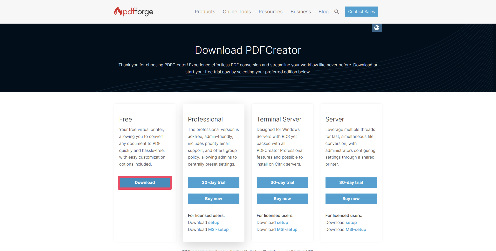
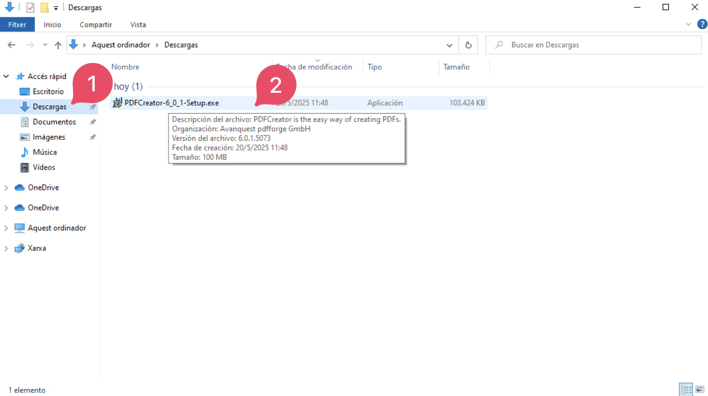
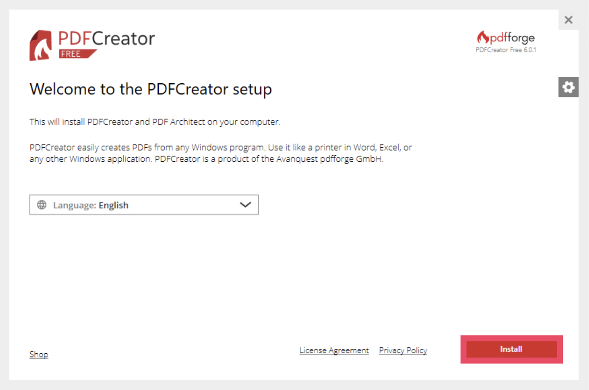
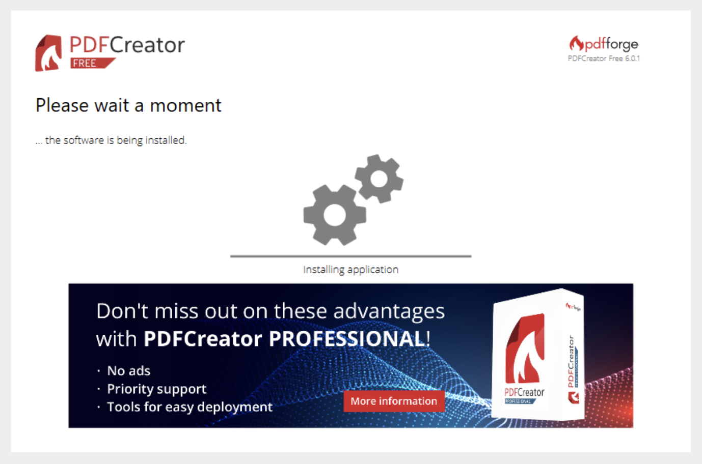
3. Compartir impressora Afegir impressora a l'ordinador client
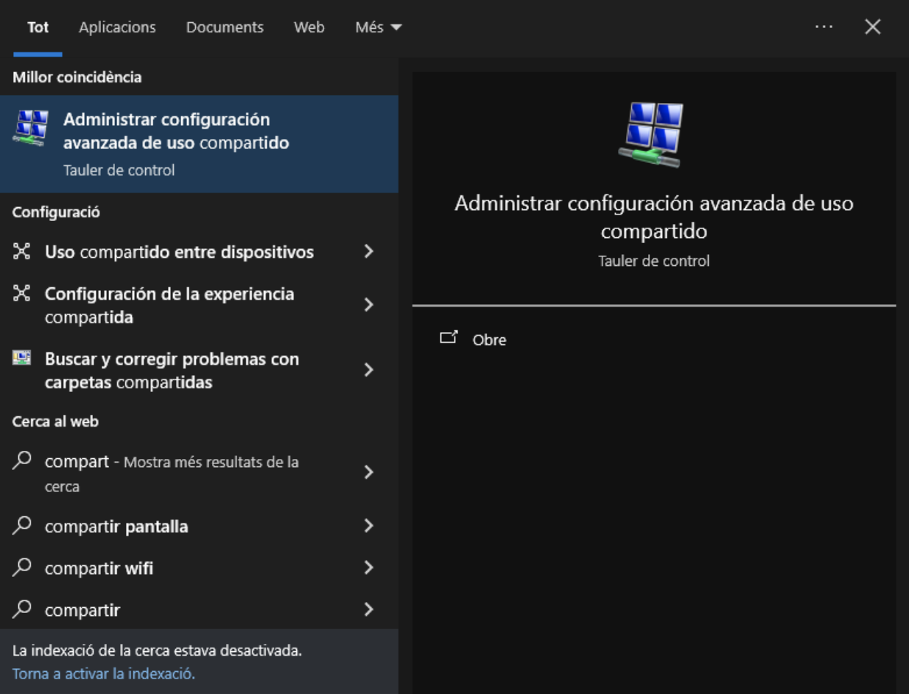
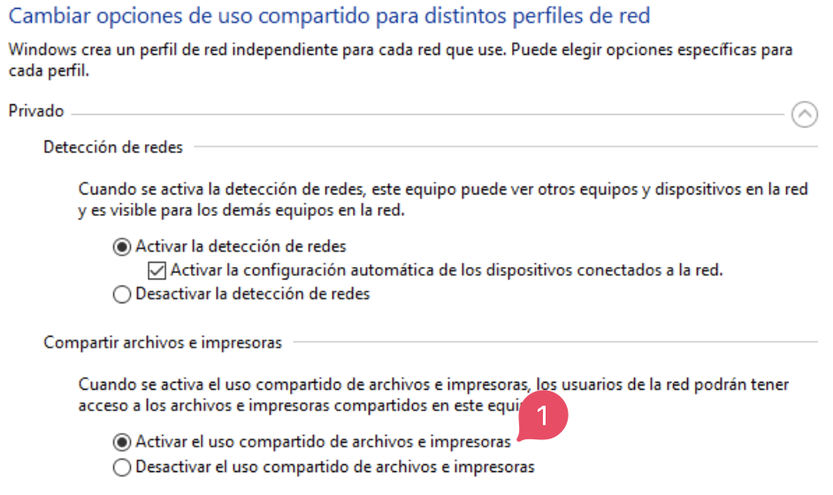
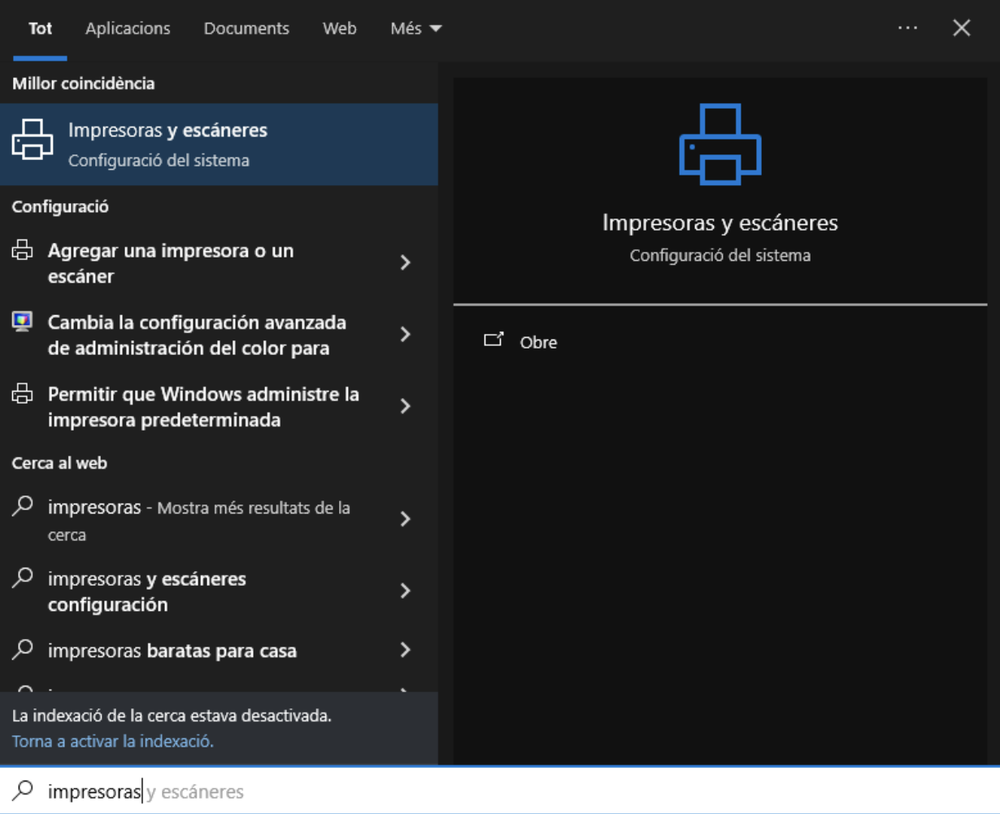
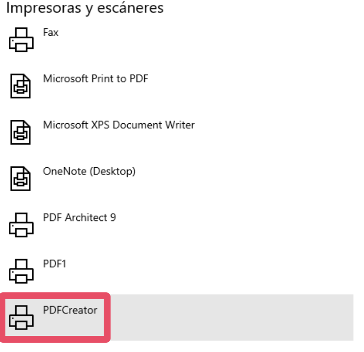
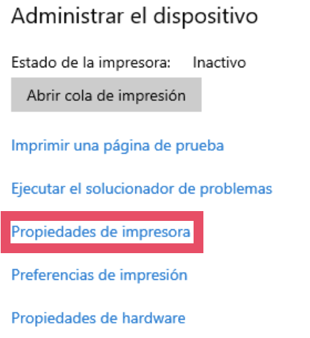
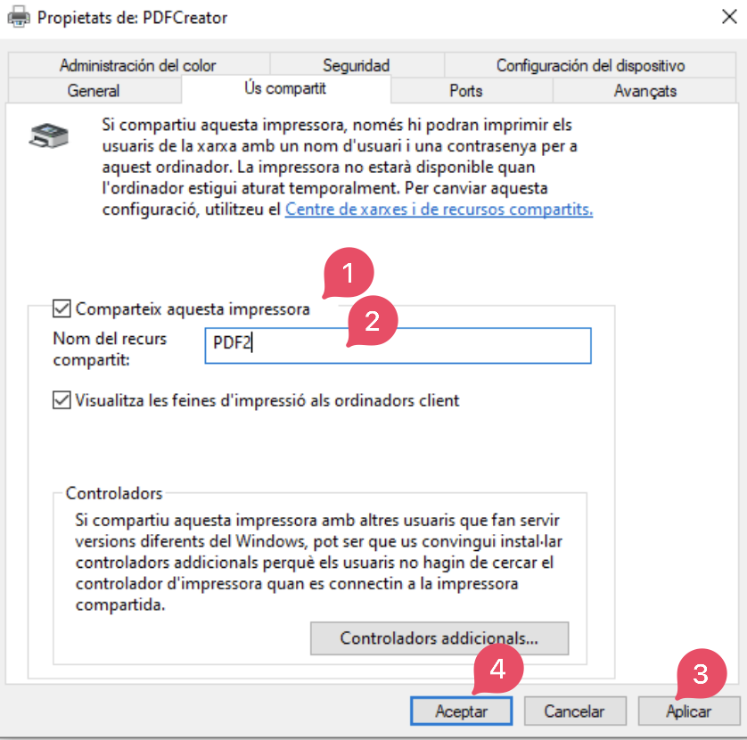
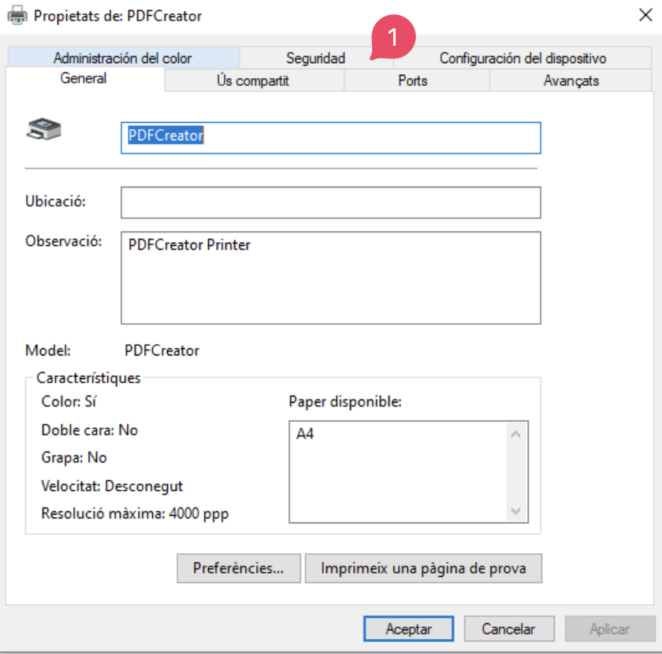
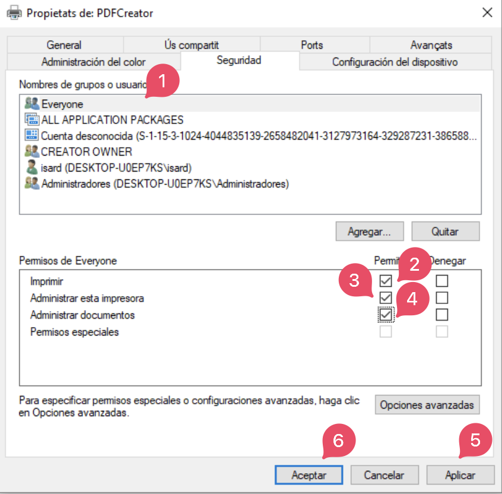
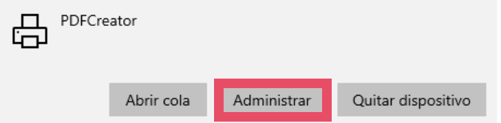
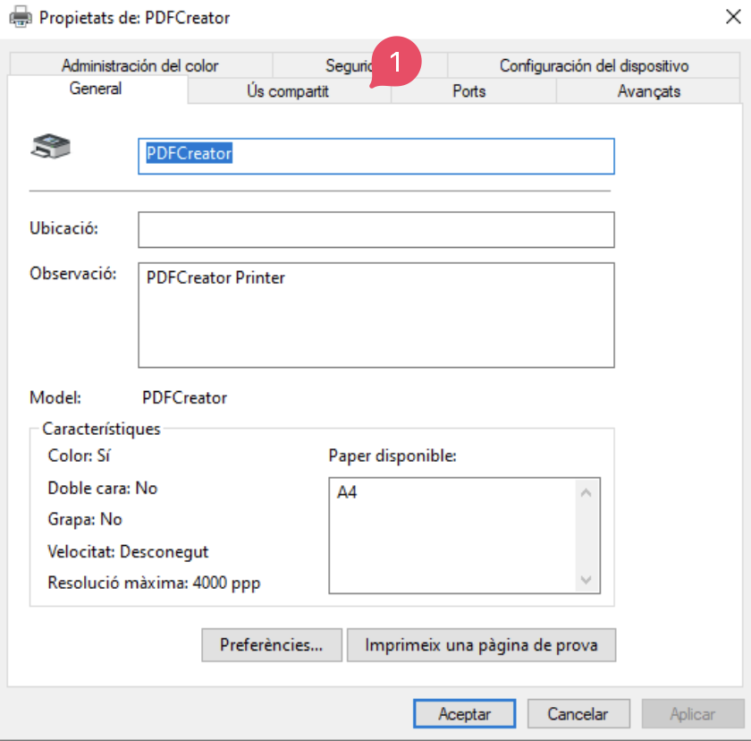
4. Afegir impressora a l'ordinador client
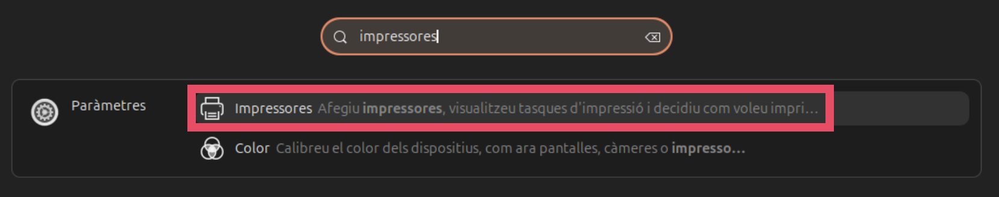
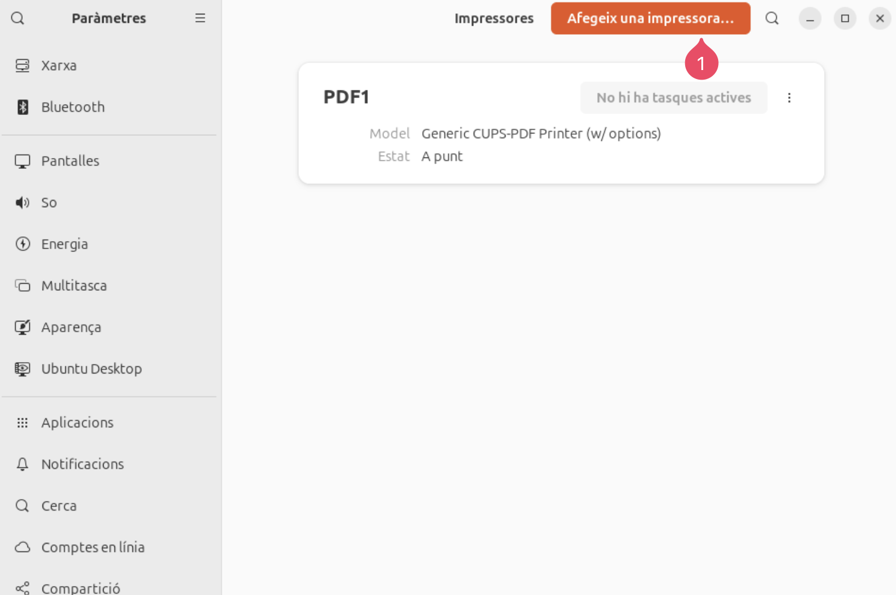
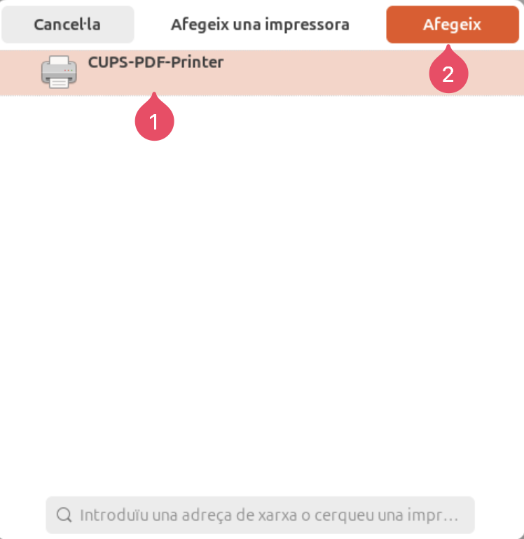
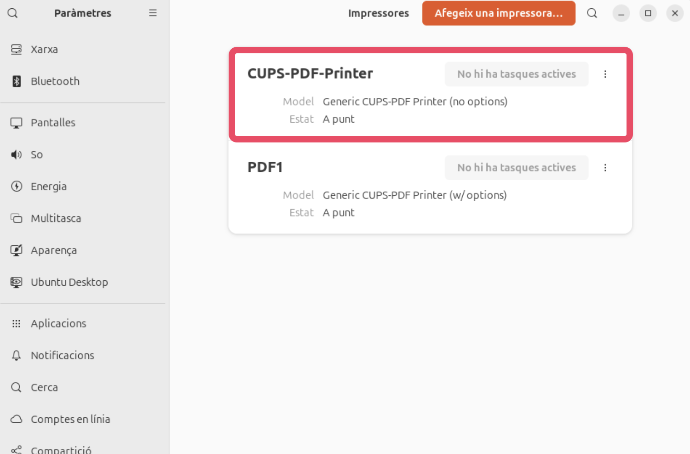